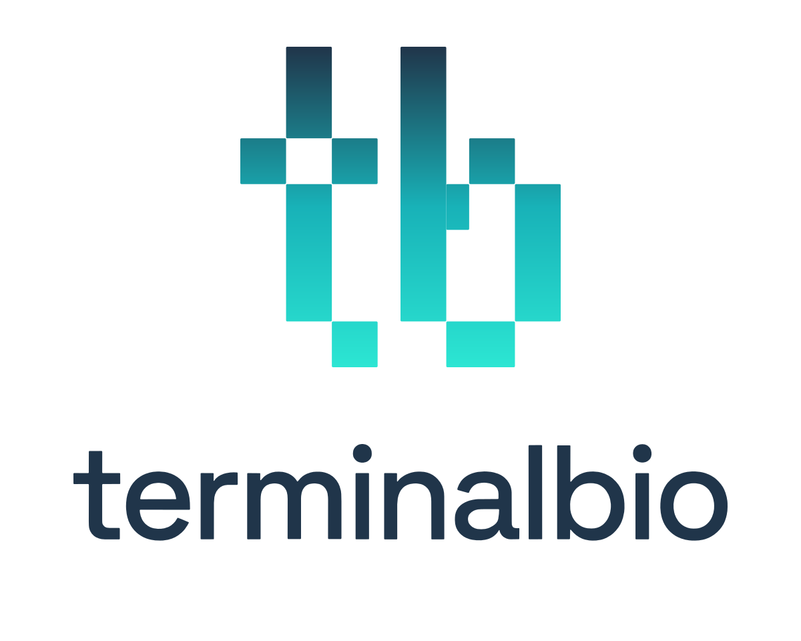

Everything interesting happens at the intersections.
terminalbio is a biological intelligence and computational biology organization uniting frontier foundation models, reproducible model operations, and experimental validation.

Built on computational-biological symmetry.
Our modular tb mark reflects the bridge between discrete information systems and living biological structures—where every computational hypothesis is anchored to physical measurement.
Across Biocompute, BindFM, XUZU, RNX, XIRA, and Kuiper Health, we build open, empirical tools that help researchers move from passive observation to active intervention design.
Empirical Rigor
Predictions earn trust only when calibrated against reproducible experimental readouts.
Systems Thinking
We connect molecular interfaces, cellular responses, and patient infrastructure in one loop.
Open Science
Foundational tools like XUZU are shared openly to accelerate collective biological discovery.
Translational Impact
Every computational advance is directed toward tangible therapeutic and health outcomes.